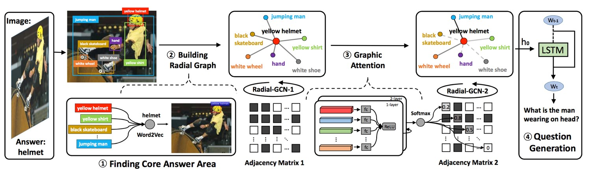
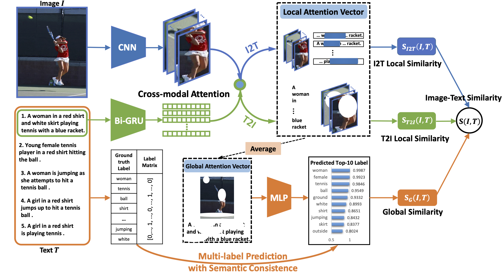
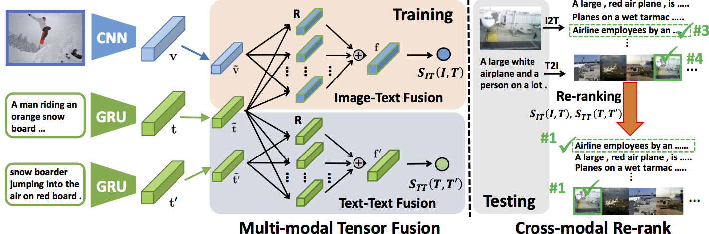
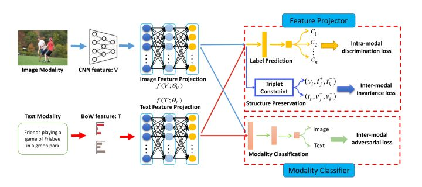
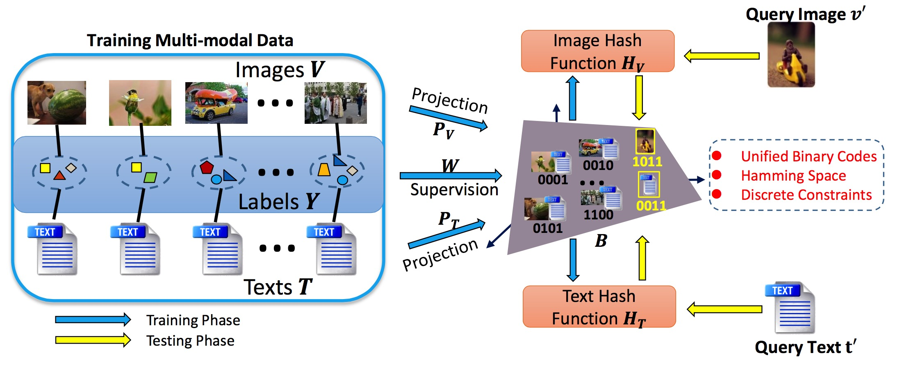
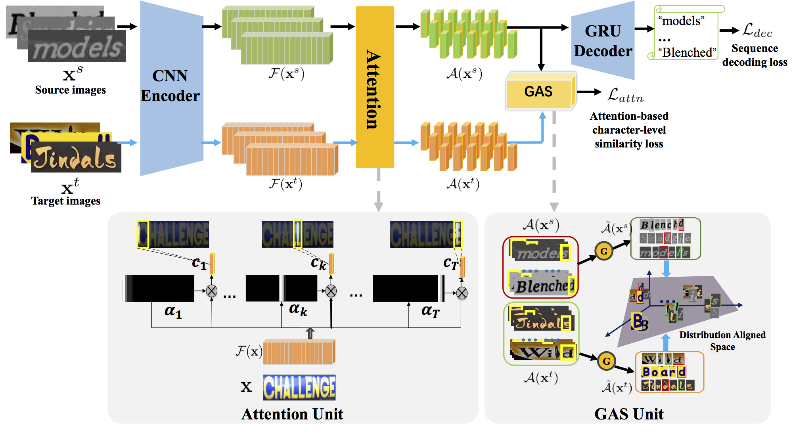
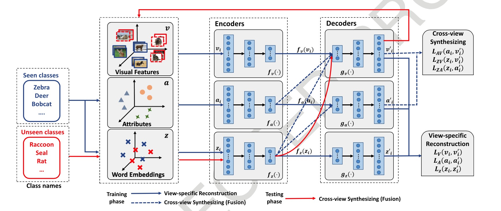
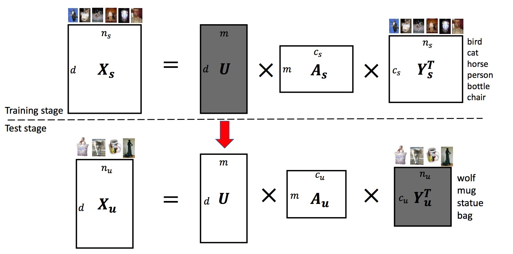

|
Xing Xu
About Me
I am currently an associate professor with Center of Future Media & School of Computer Science and Engineering, University of Electronic of Science and Technology of China (UESTC), China. I received the B.E. and M.E. degrees from Huazhong University of Science and Technology, China, in 2009 and 2012, respectively, and the Ph.D. degree from Kyushu University, Japan, in 2015. Before joining UESTC, I worked as a Research Technician at Kyushu University (2015-2016).
My research interests mainly focus on multimedia information retrieval, especially cross-modal retrieval and knowledge transfer in integrating language and vision. I have published 70+ academic papers (30+ in CVPR, ACM MM, AAAI, TIP, TMM, TCYB, etc). I have served as reviewer for top conferences such as CVRP, ICCV, ACM MM, AAAI and top journals such as IEEE TIP, TNNLS, TMM, TCYB, leading guest editor for Journal of Visual Communication and Image Representation.
I am the recipient of the Best Paper Award at ACM MM 2017, the World's FIRST 10K Best Paper Award - Platinum Award at IEEE ICME 2017, the Best Paper Award at ISAIR 2020 and IEEE Multimedia Prize Paper Award 2020.
In 2019, I received the Outstanding Young Researcher Award from the IEEE Computer Society, Special Technical Committee on Big Data.
欢è¿�有志äº�ä»�事计算机视觉ã€�人工智能方å�‘å¦æœ¯ç ”究和算法开å�‘çš„å�Œå¦æŠ¥è€ƒç ”究生~ å�Œæ—¶ä¹Ÿæ¬¢è¿�计划ä¿�ç ”å’Œå‡ºå›½çš„å�Œå¦æ��å‰�å�‚ä¸�å®�éªŒå®¤ç§‘ç ”è®ç»ƒ~
News
06/25/2020 – One paper about cross-modal retrieval is accepted to IEEE Transactions on Cybernetics. [NEW]
04/23/2020 – One paper about zero-shot cross-modal retrieval is accepted to the 43th International ACM SIGIR Conference on Research and Development in Information Retrieval (SIGIR 2020). [NEW]
03/29/2020 – One paper about visual question generation is accepted to the IEEE Transactions on Neural Networks and Learning Systems (TNNLS). [NEW]
03/06/2020 – Two papers about zero-shot cross-modal retrieval and adversarial attack on image captioning are accepted to the 2020 IEEE International Conference on Multimedia & Expo (ICME). [NEW]
02/24/2020 – Two papers about cross-modal matching and adversarial attack on OCR are accepted to the 2020 IEEE International Conference on Computer Vision and Pattern Recognition (CVPR). [NEW]
01/13/2020 – One paper about image-text matching is accepted to the IEEE Transactions on Neural Networks and Learning Systems (TNNLS). [NEW]
06/01/2019 – We have organized a special issue titled ‘‘Integrating Vision and Language for Semantic Knowledge Reasoning and Transfer" on Journal of Visual Communication and Image Representation. [CALL FOR PAPER] [ link ]
Highlighted Research
|
 |
Radial Graph Convolutional Network for Visual Question Generation
Xing Xu, Tan Wang, Yang Yang, Alan Hanjalic and Heng Tao Shen.
IEEE Transactions on Neural Networks and Learning Systems, 2020.
[ bibtex ]
[ code ]
|
|
 |
Cross-Modal Attention with Semantic Consistence for Image-Text Matching
Xing Xu, Tan Wang, Yang Yang, Lin Zuo, Fumin Shen and Heng Tao Shen.
IEEE Transactions on Neural Networks and Learning Systems, 2020.
[ link ]
[ bibtex ]
[ code ]
|
|
 |
Matching Images and Text with Multi-modal Tensor Fusion and Re-ranking
Tan Wang, Xing Xu, Yang Yang, Alan Hanjalic, Heng Tao Shen and Jingkuan Song.
ACM International Conference on Multimedia, 2019. (*Corresponding Author)
[ link ]
[ bibtex ]
[ code ]
|
|
 |
Adversarial Cross-Modal Retrieval
Bokun Wang, Yang Yang, Xing Xu, Alan Hanjalic and Heng Tao Shen.
ACM International Conference on Multimedia, 2017. Best Paper Award
[ link ]
[ bibtex ]
[ code ]
|
|
 |
Learning Discriminative Binary Codes for Large-scale Cross-modal Retrieval
Xing Xu, Fumin Shen, Yang Yang, Heng Tao Shen, Xuelong Li.
IEEE Transactions on Image Processing (TIP), 26:5, 2494-2507, 2017. ESI Highly Cited Paper
[ link ]
[ bibtex ]
[ code ]
|
|
 |
Sequence-To-Sequence Domain Adaptation Network for Robust Text Image Recognition
Yaping Zhang, Shuai Nie, Wenju Liu, Xing Xu, Dongxiang Zhang, Heng Tao Shen.
IEEE International Conference on Computer Vision and Pattern Recognition, 2019. (*Equal contribution)
[ link ]
[ bibtex ]
|
|
 |
Fusion by Synthesizing: A Multi-View Deep Neural Network for Zero-Shot Recognition
Xing Xu, Xiang Zhou, Fumin Shen, Lianli Gao, Heng Tao Shen, Xuelong Li.
Singal Processing, 2019.
[ link ]
[ bibtex ]
|
|
 |
Matrix Tri-Factorization with Manifold Regularizations for Zero-shot Learning
Xing Xu, Fumin Shen, Yang Yang, Dongxiang Zhang, Heng Tao Shen and Jingkuan Song.
IEEE International Conference on Computer Vision and Pattern Recognition, 2017.
[ link ]
[ bibtex ]
[ code ]
|
Awards
Best Paper Award, the 5th International Symposium on Artificial Intelligence and Robotics (ISAIR2020)
IEEE Multimedia Prize Paper Award (2020)
Outstanding Young Researcher Award, IEEE Computer Society, Special Technical Committee on Big Data, 2019
Best Paper Award, the 25th ACM International Conference on Multimedia (MM 2017)
World’s FIRST 10K Best Paper Award-Platinum Award, the 18th IEEE International Conference on Multimedia & Expo (ICME 2017)
Best Student Paper Award, the 28th Edition of the Australasian Database Conference (ADC 2017)
Excellent Poster Award, the 21th Japan-Korea Joint Workshop on Frontiers of Computer Vision (FCV 2015)
Teaching
Computer Vision and Pattern Recognition (Undergraduate), 2019, Spring
Advanced Computer Vision (Graduate), 2019, Spring
Principle and Application of Microcomputer (Undergraduate), 2019, Spring
Principle and Application of Microcomputer (Undergraduate), 2018, Spring
Principle and Application of Microcomputer (Undergraduate), 2017, Spring
|